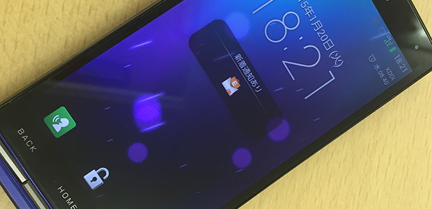

連想ゲーム！？
ワイシャツ、靴下、下着。
これらの言葉からどんなことを想像するでしょうか？
普通は「出勤時の服装」ということになりますかね。
しかし私の場合はちょっと違って「どれか切らしたら洗濯しなければならない」
というのが真っ先に思い浮かびます。
毎日洗濯するのは面倒なので、ギリギリ必要になったらやる感じです。
男一人暮らしの悲しい性でしょうか。
では次。
ティッシュ、トイレットペーパー、ゴミ袋、歯ブラシ、シャンプー。
もうわかりますよね。
「切らす直前には買っておきたいもの」です。
歯ブラシは毛が開いても強引に使えますが（笑）。
これらがなくなったら夜中でもコンビニがあるので買いに行けばいいだけです。
でも、面倒臭がりな性分の人は、帰宅途中に思い出して買っておくに越したことはないでしょう。
しかし、夜の帰宅時間になると食事のことばかり考えて、朝は覚えていたことを忘れてしまうことが多い。
やはり帰宅してから外出するという二度手間になるのはあまり気分がよくないし、逆に帰宅ついでにしっかり必要な物を買えたときには気分がいいですよね。
では、どうやって忘れないようにしたらいいでしょうか？
慣れを防ぐには？
仕事の予定は手帳に書くなりなんなりしますよね。
私の場合はiPadに管理するようにしています。
ただ、買い物の予定や洗濯の予定までそこに書くのはちょっとなあ。
自分のものなので使い方は自由ですが、混ぜこぜは分かりづらいし、そこに書くことで帰宅時に忘れないでいられるか、そこも疑問です。
ときどき、宿題や連絡事項を手の甲にボールペンで書いたりする生徒（なぜか女子が多い）がいますが、あれで覚えていられるのだろうかと心配になります。
おそらく家に帰ってから別の紙に書き写したりするのでしょうけど。
そこで私が以前からやっているのが、「自分宛てにメールを送る」ということです。
仕事の連絡を確認しつつ、フェイスブックをチェックしたりするのが習慣になっているので、必ずスマホを見ます。
そう、必ず目にするものだから、ということで自分にメールを送っておくのです。
内容は、今夜買うべきもの。
そしてホーム画面で「新着メール１通」というメッセージが表示される設定にしておけば、「あ、アレ買わなきゃ」とか、もし内容を忘れていてもメールを開けば確認できるわけです。
ということで、結構このやり方でうまくいっていました。
ところが最近、慣れが出てきまして、画面に「新着メール」を表す表示があっても、あまり気に留めなくなってきちゃいました。
画面に違和感があるからこそ、必要なことを思い出すきっかけになっていたのに、それが普通のことになってくると慣れが生じて反応しなくなってしまうんですよね。
というわけで皆様、備忘録として何か斬新な方法があればご提案いただきたく思います！